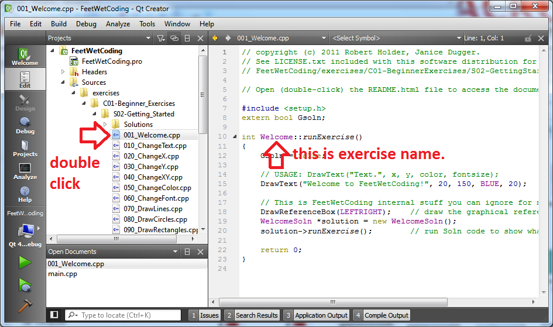
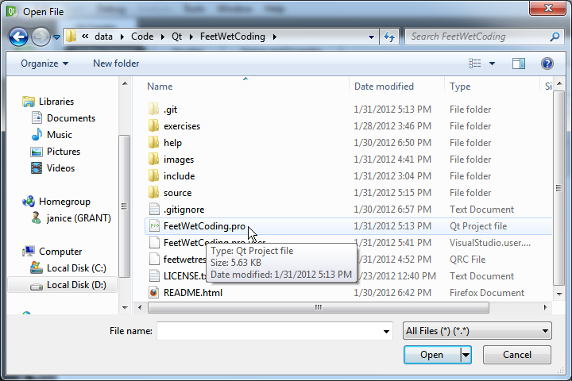
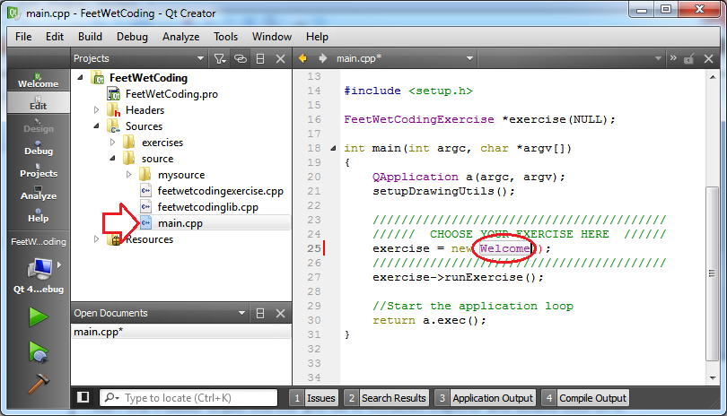
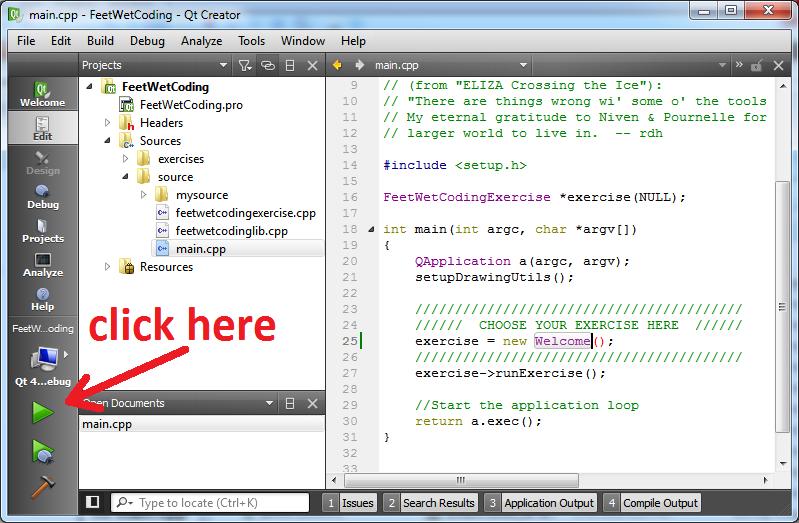
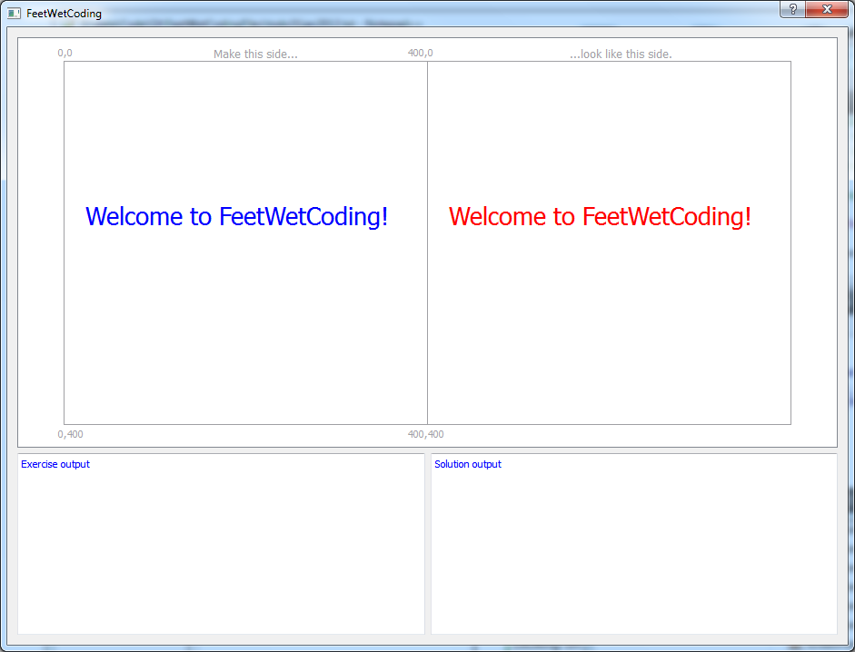
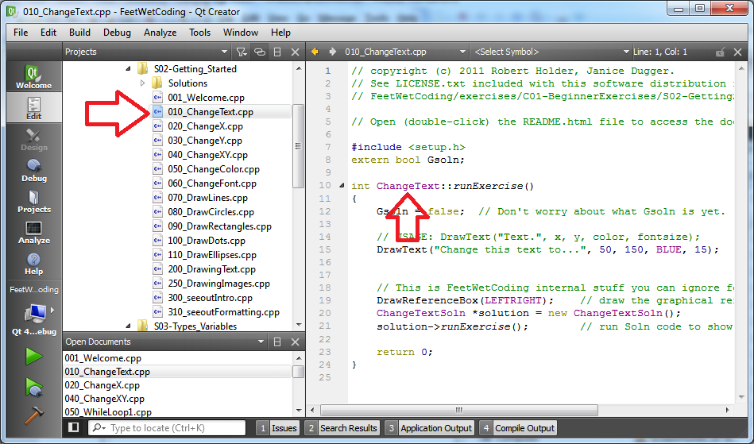
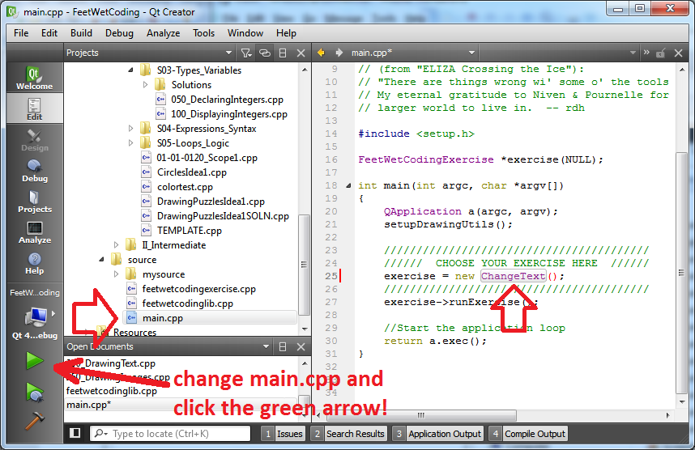
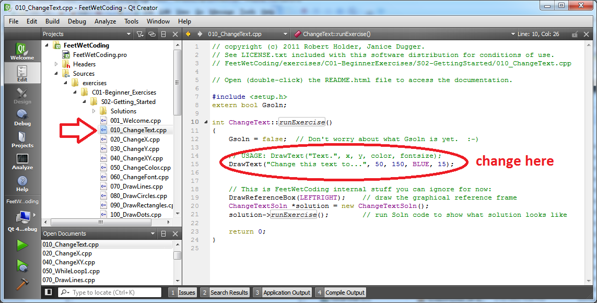

The "FeetWetCoding Qt Creator Workflow" or How to use FeetWetCoding
"Workflow" here just means "how you work through the FeetWetCoding exercises in Qt Creator." In other words, we're talking about how you load up the first FeetWetCoding exercise in Qt Creator and run it, and then load up the next exercise and run that, and so on. It may sound a little complicated trying to describe the process here, but when you do it a few times, you will see that it is easier than this description might make it sound.
Within Qt Creator when you load the FeetWetCoding project (FeetWetCoding.pro). For example, the first exercise, "001_Welcome.cpp" is located here:

Notice that "001_Welcome.cpp" is the exercise filename. When we talk about the exercise name, we're talking about "Welcome" because that's what you will put in main.cpp when you want to run an exercise.
The exercises for each chapter are located in their respective Chapter folder. Each exercise also has a "solution" counterpart, which is the original exercise name with the characters "SOLN" after it. So the "solution" for the first exercise is called "001_WelcomeSOLN.cpp" and is located here:

The idea for doing exercises in FeetWetCoding is that you work on one exercise, and try to accomplish the goal of that exercise, and then if you get stuck, or if you finish the exercise, you can check your work in the "<exercise name>SOLN" file. Then, when you are done, you can move on to the next exercise.
To work with a particular exercise you have to "tell" main.cpp which exercise you want to work on. These instructions explain how to do that. Don't worry if this doesn't seem to make sense right now, just learn the process, and it will start to feel natural soon.
From now on, we will refer to the location where you unzipped the FeetWetCoding download as "~FeetWetCoding". You pronounce ~FeetWetCoding as "FeetWetCoding home." ~FeetWetCoding will usually be Libraries\Downloads on your hard drive , which is actually:
...however if you unzipped the .zip file into some other location, then that is ~FeetWetCoding.
If you haven't already, open the FeetWetCoding project in Qt Creator by clicking on the FeetWetCoding.pro file in ~FeetWetCoding:

...you can also start Qt Creator from the Start Menu and navigate to the FeetWetCoding.pro file that way with "File > Open File or Project..."


...but I find it easier to just find the .pro file in Windows Explorer and double-click on it.
Once you have the FeetWetCoding project open in Qt Creator, you can see which exercise is currently selected in main.cpp. Doubleclick on main.cpp to view it in the code editor:

Here you can see that main.cpp is going to run the Welcome exercise, located in 001_Welcome.cpp.
When you click the green "Run" arrow button, Qt Creator will "build" and then run the FeetWetCoding program.

This may awhile, but eventually the build should finish and the program should run. The first time you run FeetWetCoding, when the program runs and pops up in a new window, it should look like this:

So if all went well, the Welcome exercise ran successfully, you have looked at the code in 001_Welcome.cpp and now you are going to check the solution. You can open the file Solutions/001_WelcomeSOLN.cpp to see what the solution code looks like. If you are working on an exercise and get stuck, or finish and want to check what the solution code looks like, just load the Solutions/xyz_ExerciseNameSOLN.cpp file to see it in Qt Creator.
Now let's move on to the next exercise, ChangeText which is in 010_ChangeText.cpp:

To use the ChangeText exercise, you need to tell main.cpp that you want to run it. Just copy+paste the exercise name "ChangeText" into the correct place in main:

Make your changes to the ChangeText exercise in the file 010_ChangeText.cpp:

Click the green run arrow to build and run. When you've got it changed (this is a pretty easy exercise), check the solution in Solutions/010_ChangeTextSOLN.cpp:

As you work through the exercises, this is the basic process you will use. Just open the 020_ChangeX.cpp (or whatever the next one is named), work on it, check the solution in 020_ChangeXSOLN.cpp, and then move on!
Any feedback on exercises is welcome at support@feetwetcoding.com!
Now you are familiar with the basic process of how to work with the individual exercises in FeetWetCoding. Each exercise is also discussed in this documentation. You are now ready to get started on the Exercises!
If you mangle an exercise and just can't get FeetWetCoding to build at all, you can always download it again from Github. If you do, remember to unzip it in a different directory (folder) than where you already have FeetWetCoding, or you will overwrite all the exercises you have already completed!
Note: As you may have noticed, Qt Creator has a number of different views, including, "Edit", "Debug", "Projects", "Analyze" and "Help." You will be spending most of your time while learning to write C++ code in the "Edit" view.
TIP: If you ever find yourself trying to see your code, and you do not see it on the right hand side of the screen, make sure you are in the "Edit" view by clicking on the "Edit" icon on the left side of Qt Creator. Sometimes you will be editing code, and then you will change the view, and won't be able to see your code. Clicking on "Edit" should fix it, and your code should be viewable again.
FeetWetCoding version 0.0.1 copyright (c) 2011,2012 Robert Holder, Janice Dugger.
support@feetwetcoding.com -- Latest Source: https://github.com/rdholder/FeetWetCoding
Created with the Personal Edition of HelpNDoc: Easily create Web Help sites